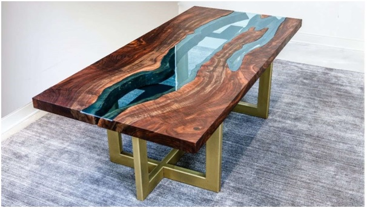

Epoxy Resin lamination on wood table top.
Essential Tools
Essential Materials
This project begins with one table base of your choice.
Wood Table with Epoxy Resin River and Lamination
The rest of the materials are a bit more specialized:
Building a Epoxy Resin River Table
First, be absolutely certain that you read all the literature that comes with the materials you’re working with. Choose CCR epoxy resin and CCH hardener and make sure that it’s compatible with the tinting pigments you choose.
Be sure that you are working in a warm, dust-free environment. Anything else could cause this project to fail.
- Ensure all the bark has been removed from your live edge slabs, and be sure that both pieces are cut to the same length and sanded smooth. Ensure that you plan for the finished top to rest nicely on top of the base you have chosen.
- Use mineral spirits to clean any remaining debris from the live edge slabs.
- Build a box with plywood. This simple box will serve as a dam to contain your epoxy resin. You can determine dimensions by arranging your slabs as you plan to position them inside the dam, with their straight edges on the outside and their live edges on the inside for the desirable rtable effect.
- Lay the tarp or plastic sheeting down over your work area to provide protection from spills. Set the dam on the workbench or table. Check to ensure that it is level. Don’t skip this step! If your work area is not level, your table will have a slanted top.
- Place your boards inside the dam to ensure that you like the fit. It should be snug, but not so tight that you can’t move the planks. Remove the planks from the dam.
- Seal the dam’s joints with silicone and then line the interior of the dam with plastic shipping tape.
- Place the planks back in the dam. It’s your last chance to make any adjustments to the way the planks line up with one another, so ensure that you’re happy with the way the layout looks.
- You’re going to start mixing epoxy, but don’t prep your whole supply at once. Start with a small amount, following the manufacturer’s instructions. Do not add the pigment yet.
- Brush a thin coating of clear epoxy onto the planks.
- Add pigment to the epoxy remaining in the container. Mix more if you need to. You’re going to pour a ¼ inch layer into the river so try to gauge how much you’ll need.
- After mixing pigment into the epoxy, pour the first layer of the river into the center area between the planks. Work slowly to avoid excess air bubble formation.
- After the first river layer has been poured, use your heat gun to pop bubbles as they come to the surface. Be very careful with this process. Do not get too close to the epoxy, and don’t hold your heat gun next to any area for too long. Use the low setting on the heat gun. Hold the heat gun at least 6 inches from the epoxy’s surface. Don’t use a hair dryer. Use a heat gun!.
- Let the epoxy dry before you begin with the next layer. You can wait overnight, or you can start the next layer when the epoxy develops a dry film on top.
- Mix another batch of epoxy with pigment, adding another ¼ inch layer to the river.
- Follow steps 12, 13, and 14 repeatedly until your river rises just above the live edges on the plank. You don’t want it to overflow, but you do want to have some extra material to sand off so that the finished project is perfectly even, without a hollow area in the middle section. Be patient and don’t hurry. Pouring too deep could cause the epoxy to bake, and this will ruin your project.
- After the last river layer is complete, let the project cure for 72 hours or as long as the resin epoxy manufacturer recommends. Proper curing time is essential for strength.
- Pop the Laminated table out of its mold. You can simply unscrew the sides of the mold and remove them if this seems difficult. The tape should be easy to remove and the plywood underneath can continue to support your project while you finish completing the top.
- Sand the entire top until the river line is level with the rest of the table.
- Sanding the wood and resin to a smooth finish Once the surface of your table is flat, you will need to use a hand-held sander (orbital or dual action) to sand and smooth the surface of the wood and resin. Start with the most coarse grit abrasive and work up to the finer papers through the grits. We would suggest the following grits - 120, 240, 400, 800 and finishing on 1200. Although the surface of the wood will quickly become very smooth, it is really important to take time on the resin to make sure that all scratches from the previous grit have been completely removed by the current grit before progressing on to the next one. If you don’t do this, you will find that when you polish the resin at the end of the process, you will see shiny scratches left by earlier grits.
- When the table top is complete and dry, it’s ready to attach to the base.